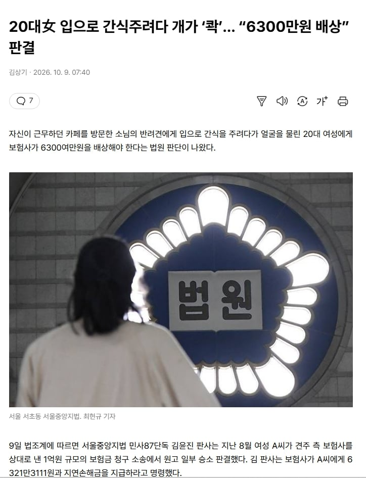

20대女 입으로 간식주려다 개가 ‘콱’… “6300만원 배상” 판결
댓글
A씨는 처음엔 손으로 개에게 간식을 줬으나 이후 간식을 자신의 입에 물고 개에게 먹이려고 얼굴을 들이밀었다가 입술 부위를 물렸다....
아마 원래 안무는 그런 개였는데
저날따라 물었겠지??
원래 사나웠다면 저짓 하기전에 견주가 말렸을테니...
그런 관점에서 보면 무조껀 우리애 물어요 하고 말하고 다녀야 겠다...
안물어요 했는데 물면 좆대니까
무나요? 물어도 되니까 만져도 될까요? 이러니까 견주가 주둥이 잡고 만지게 해주던데 오싹오싹해서 기분 좋았음
미친놈이네 ㄷㄷ문다는데 안무서움?
당연히 진짜 무는 놈은 안 만짐. 그 경계에 선 놈들만 만지고. 개 몇마리 키우다가 지금은 갑다기 알러지 생겨서 못키우는데. 진짜 무는 놈은 내가 뭔짓을 해도 물겠다는 그 느낌이 있음
꼴값 떨지말고 주인이 문다하면 근처도 얼씬하지말아라
그럼 오싹오싹하지 않잖냐
할수있다
나라면
기사보면 3개월전에도 엉덩이 물었던 전력이 있대
근데 약관이 대체 어떻길래 보험사가 물어주게 된거지
개도 물고 보험사도 물어주고 앙앙
기사 보면 3달전에도 사람 물었다고 나옴. 근데 제지를 안했다고 함.
그러니까 카페를 방문한 '손님의' 개한테 '가게 주인'이 입으로 간식을 주려다가 물렷다는거임?
6300이면 여간 크게 난 상처가 아닌가 보네
왜 입으로 주는거냐?.. 주인은 상상도 못했겠네..
이걸 보험사가 줘야 되냐 싶긴한데 약관상 거부 할 이유가 없다면 줘야겠지 뭐
어떤 크기의 개였을까
강형욱이 절대하지 말라는 짓 중에 하나던데
일부러?
저정도금액이면 얼굴씨게 물렸나본데
얼굴에 치명적인 흉터생겼나보네
거의 코나 입술이 없어지는급이었나
금액이 쎄다
판사는 A씨가 다중채널네트워크(MCN) 회사와 계약을 맺고 사회관계망서비스(SNS)인 틱톡 콘텐츠에 출연하는 등의 활동을 해온 점에 주목했다.
개붕이들이었으면 기각당했을듯
개랑 베프 먹음
왜 저러지
주인이 해도 위험할 것 같은데 예민한 개가 입똥내 맡으면
개한테 입으로 음식을 물고 준다는게 이해가 안되는데
사람 대 사람은 급 엄청 따지면서 동물하곤 왜 급 안따지지
그와중에 '소님' 오타... ㅋㅋㅋ ai 가 아니라 손으로 입력했나 보네
사람이 작성한 것 처럼 보이게
눈에 잘 띄는 사소한 오타 하나먼 넣어줘~
소는 누가 키울거야~
전후사정을 정확히 모르지만...
일부 승소 할 정도면 주인의 관리 부주의 등 주인의 귀책사유가 있었단 거겠지?
그렇지 않고서야 다치겠다고 작정하고 저지른 짓에도 손을 들어줄 리 없어 보이는데
대채 멀 어케 햇길래 귀책이 잇지
보험사가 있어? 견주?
A씨는 이 사고로 왼쪽 윗입술에 흉터와 콧등에 상처가 남았다. 입 주변 근육 손상과 피부 결손으로 입술의 길이가 달라지고 비대칭도 발생했다.
근데 앙 물린것도 아니고 개가 좀 큰가 ㄷ
ㄷㄷㄷㄷㄷㄷㄷㄷ
무슨 의도로 입으로 주지
좋은점이 하나도 없는데
개랑 빼빼로 게임 하고 싶엇나봐
일배책은 무적이다
더럽게 왜 입으로 주냐?
다행히 보험 가입해서 돈 받겠네 가입안했으면 ㅈㄴ복잡했을거같음
개도 이건 아니다 싶어서 물었나....
해당 개는 사고 약 3개월 전에도 이웃 주민의 엉덩이를 문 전력이 있는 것으로 파악됐다.
-----
아마 과거 전력 때문인듯
타인을 문적있는 개라는 걸 인지하고 있으면서도 주인이 제지하지 않은 게 판결의 이유인듯
다들 물린사람만 비난하길게 어떤개인가몰랐는데 내용보자 문제있는 개네.

개도 더러워서 물었나
입으로 주는 기준이 아니라 손 물린 기준이옸어야하지않나
근데 저건 병신짓 한게 맞지않나 개 주인도 보험사도 골치 아프겠네
개 눈맞추기는 함 뜨까라고 본 것 같은데..

시발 마우스 투 마우스는 무슨 깡이냐 ㅋㅋㅋ